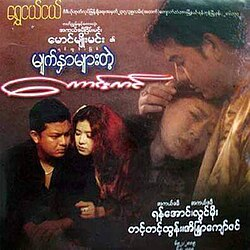
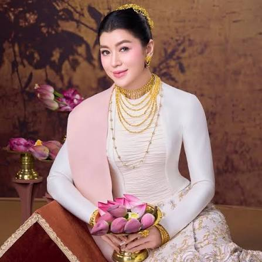

 |
English Name | Eaindra Kyaw Zin Oo |
|---|---|---|
| Burmese Name | အိန္ဒြာကျော်ဇင် | |
| Education | BSc (Chemistry) | |
| Nationality | Myanmar | |
| Occupation | Actress, Model, Producer, Business Woman | |
| Born | April , 27 , 1977 | |
| Years active | 1996-present | |
| Height | 160 cm (5 ft 3 in) | |
| Spouse | Pyay Ti Oo | |
| Childres | Pyay Thu Dra, Pyay Dia |
Eaindra Kyaw Zin was born to a well-to-do family in Yangon, the youngest child of Mya Thida and Kyaw Zin. She is a granddaughter of Bo Zeya, one of the Thirty Comrades who founded the modern Burmese Army, a niece of Dagon Taya, a writer, and a first cousin of singer Hayma Ne Win and singer and film star Yaza Ne Win. Kyaw Zin graduated from Yangon's Dagon 1 High School. She holds a BSc degree in chemistry.
Kyaw Zin admitted that film was not her initial choice of a career. Rather, she envisioned herself as an independent artist or a doctor but had to reevaluate her options after getting sub-par grades in school. Her first foray into the entertainment industry came by way of a local beauty contest. She won the Miss Kokkine contest in 1996, and then went on to win Miss Christmas the same year. Following 1996, she began to act in TV series such as Loving Editor (Chit Thaw Editor) and Ah Hnine Mae. She became popular in the Ah Hnine Mae TV series with a character called Po Tay. For the next two years she appeared in magazines and modeling shows. In 2000, she scored her big break as an actress in the film Pyaw Lai Kya Ya Aung (Let's Have Great Fun) as the lead actress.[1] She was nominated as best lead actress at Tha-Mee-Shin Film for 2000 Academy. Ironically, her film career in the early 2000s was handicapped by the top leading man of that day, Yaza Ne Win, her first cousin. In 2003, she spoke to Chiangmai-based The Irrawaddy magazine that "I have limited opportunities to act in current popular movies. In the movies, I can only perform sibling roles with my first cousin and we can not shoot love scenes." As it is leading men who score big at the box office in Burma, being cast aside by male superstars is an actress's best chance at fame. Eaindra Kyaw Zin won the 2004 Myanmar Academy Award, playing a villain role in the movie, Flirtatious Sky (မျက်နှာများတဲ့ကောင်းကင်). She continues to act in films and model for commercials. Eaindra Kyaw Zin also won the 2017 Myanmar Academy Award, playing in the main role in the movie, Knife in the Heart ( Yin-Bat-Htae-Ka-Dar). Although she is over 40, she is still a top model and actress in an industry full of young starlets. She is also vice-CEO of Pyay Ti Oo Education Foundation and Chair-Person of Thudra Film Production and The Bridge Myanmar.
| Year | Title | Director | Co-Stars | Notes |
|---|---|---|---|---|
| 2000 | Thamee Shin | Khin Maung Oo & Soe Thein Htut | Yan Aung, Dwe, Wyne, Sai Bo Bo, Khin Than Nu, Cho Pyone, Myo Thanda Tun, Soe Moe Kyi, Nwae Nwae San | Nominated-Best Actress Award |
| 2002 | A Chit The Lay Pyay | Ko Aung Min Thein | Dwe, Phyo Ngwe Soe, Sai Bo Bo, Kutho, Smile, Nawarat | Nominated-Best Actress Award |
| 2004 | Myet Nhar Myar Tae Kaung Kin | Maung Myo Min (Yin Twin Phit) | Yan Aung, Lwin Moe, Tint Tint Tun | Won-Best Actress Award |
